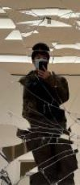

Pic in SFmoma
I major in Visual Communications who likes learning about the various techniques designing for diffeerent mediums. It is interesting since I get to see so many ways people design various things which stem from actual cultural influence or sub cultural art movements. I have an interest in mediums that make use of motion well such as animation or video games and hope to use them well in the future.